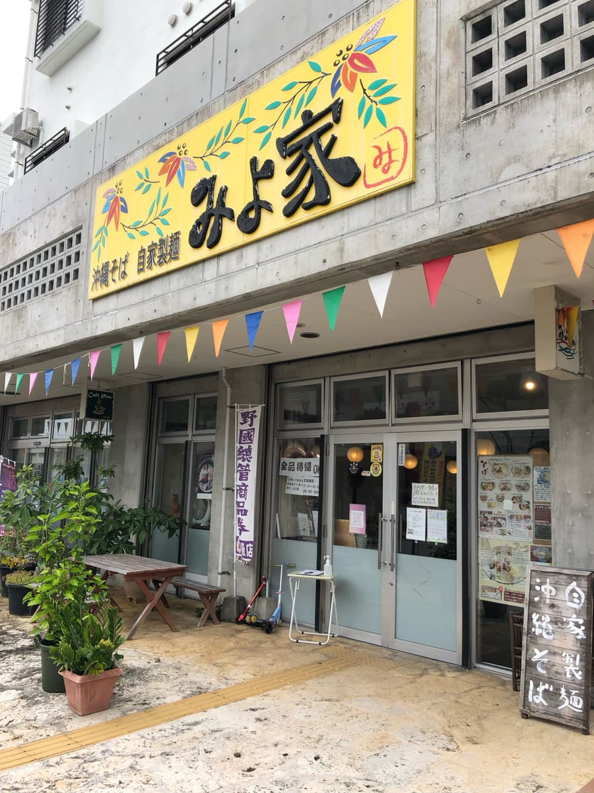
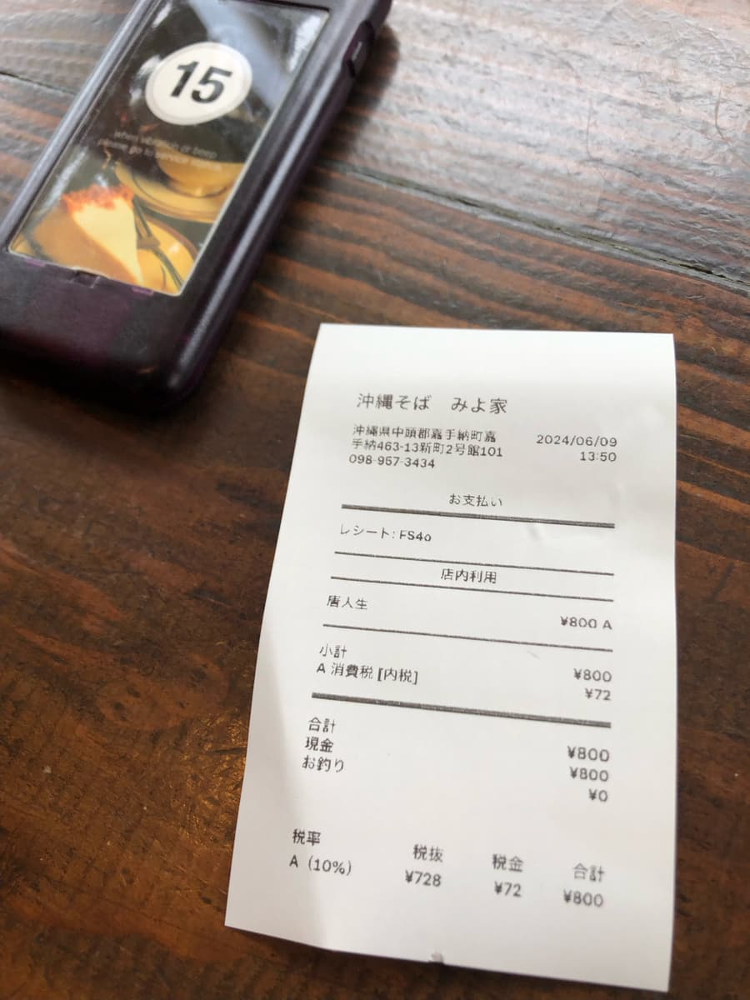
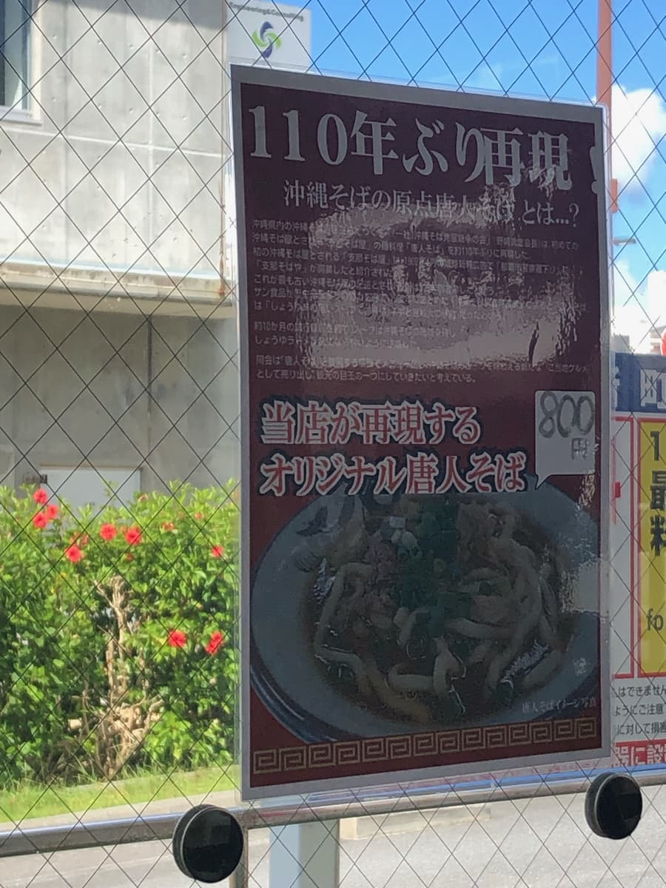
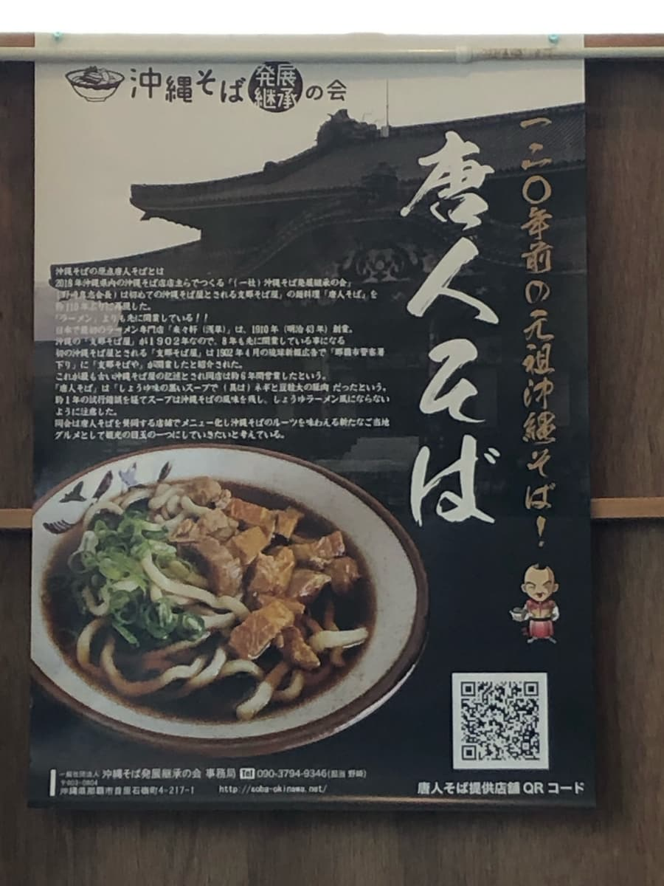
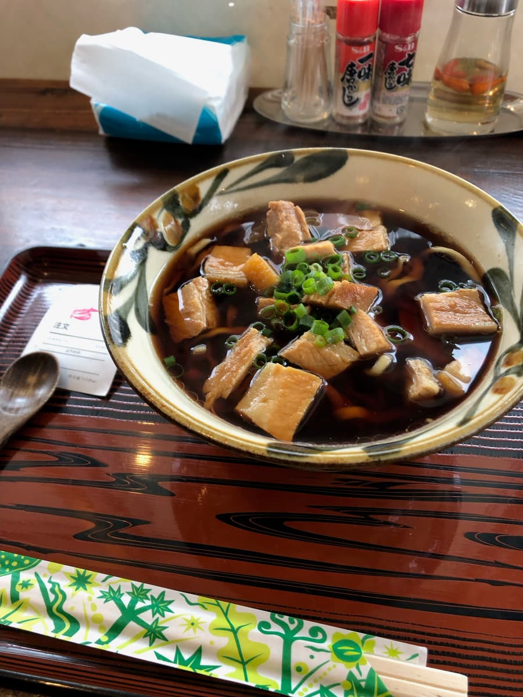
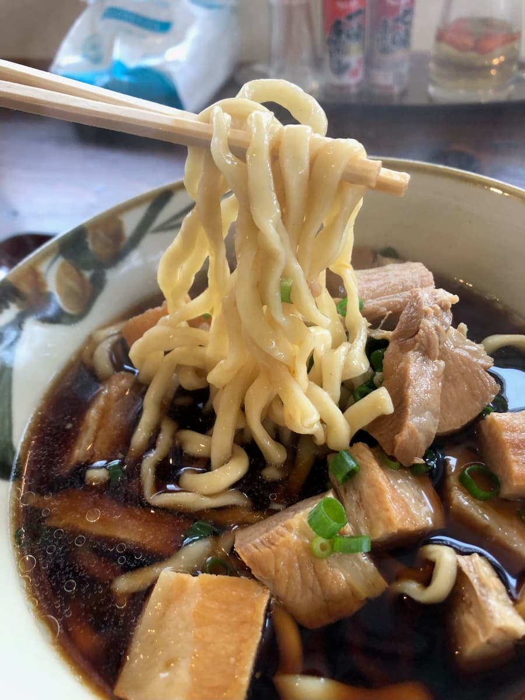
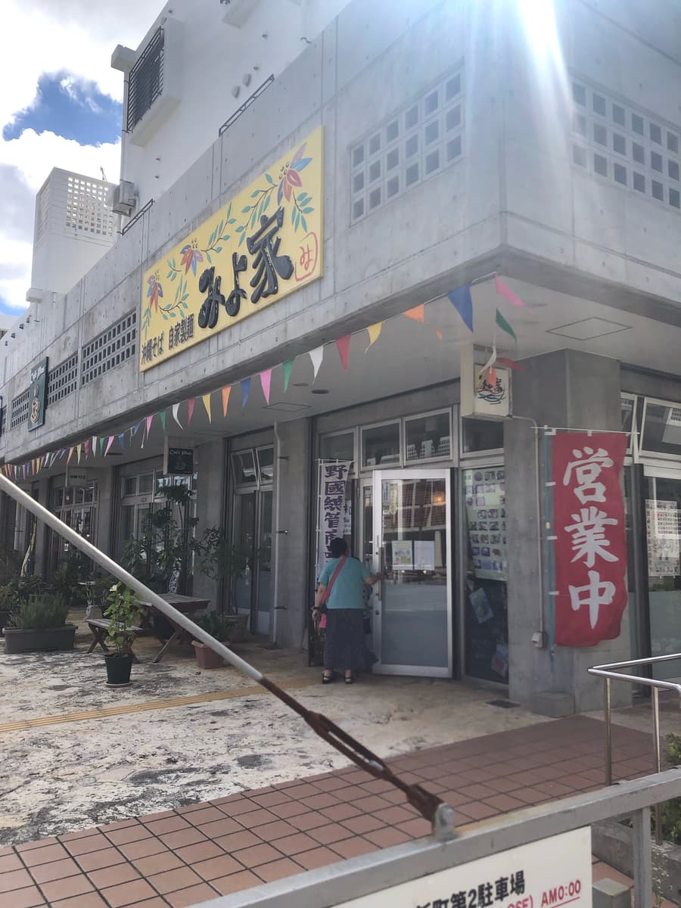
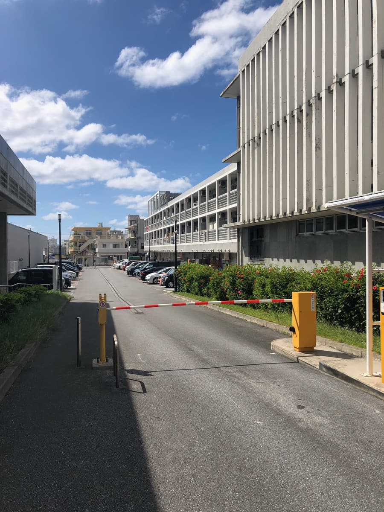
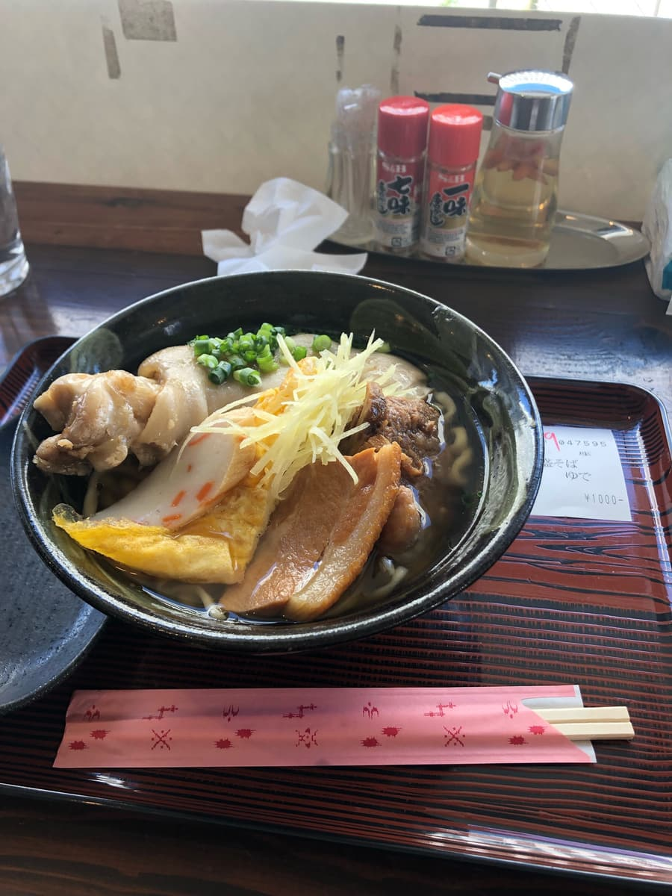
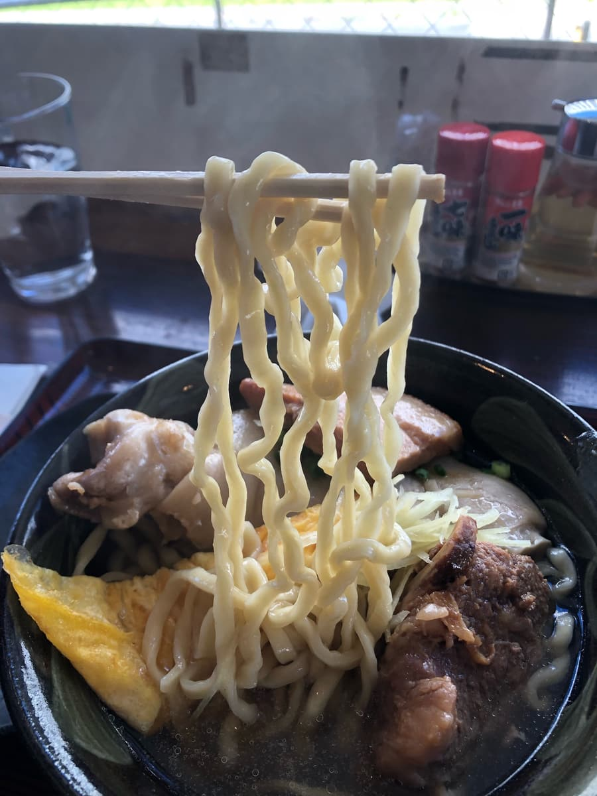

― 第2次造访（2024年6月）―
※这篇文章是用「Chat gpt4o」写的，再由我部分加笔。
2024年6月去吃的😄 我用前阵子在冲绳面集章活动的「面Joogu」颁奖典礼上拿到的「美代家」500日圆折价券，去吃了一直很在意的「唐人面」😆
这碗「唐人面」被认为是冲绳面的源头，是睽违110年复活的一品。
「美代家」的店面装饰充满冲绳风情的缤纷色彩很吸睛，入口挂着写着「自家制面 冲绳面」的招牌。一如往常挤满了当地客人。

点餐在店内简单完成，拿到号码牌后在座位上等候。等待时间不算太长，店员们也很亲切，服务令人愉快。

店内贴着详细介绍「唐人面」历史与特色的海报。「唐人面」可说是冲绳面的原点，睽违约110年复活的这碗面，特色是特制的酱油基底汤头。



端上来的「唐人面」，光看外观就对黑色的汤头印象深刻。喝一口，以为酱油味会很重，没想到鲣鱼的风味很明显，是温和的味道。这对喜欢鲣鱼汤底冲绳面的人来说，是无法抗拒的亮点。

接着吃面。自家制的生面口感Q弹，跟汤头也非常搭。这种Q弹感是市售面条吃不到的特别口感，很有吃头。
配料有葱和豆腐大小的猪肉，能享受到和一般冲绳面不同的风味。这肉的味道与汤头相辅相成，整体平衡非常好。
「唐人面」不愧是复活之名的一品，汤、面、配料各自完美调和。能用500日圆的折价券实际只花300日圆享用，也是让人开心的一点。不只是普通好吃，更是一碗让人感受到历史与传统的面。
评分（9分/15分）：汤头外观黑黑的很有冲击力，看起来味道很重，但其实就是普通冲绳面那种鲣鱼高汤很够味的好喝感觉。能吃到冲绳面源头「唐人面」的「美代家」，要不要来试试呢？
面：★★★☆☆（3）
汤头：★★★☆☆（3）
配料：★★★☆☆（3）
― 第1次造访（2023年10月）―
2023年10月吃的。这家店是「第13届冲绳面集章活动（2023.10.1～2024.2.29）」的参加店，我是当作34家店中的第5家去的😊


进到店内，因为是午餐时间，挤满了当地客人。还有不少年长的客人，觉得是在地区很受欢迎的店😁
集章活动的小册子上介绍了「全盛面」，所以我点了「全盛面」。店内深处靠近厨房的地方设有售票机，用售票机点餐。
我问「可以用手机付款吗？」，对方说可以刷信用卡，所以想用信用卡结帐，但不知道是店员操作失误还是机器故障，刷卡失败，最后还是用现金在售票机买了餐券(;^ω^)
还是期待所有冲绳面店都能早日支援无现金支付(;^ω^)

稍等一下，全盛面来了。照例先喝一口汤。看起来是无添加的汤头，是清爽系的鲣鱼高汤。淡淡的鲣鱼高汤味，是温和的口味。
这里的汤头是让人联想到之前吃过的那霸市首里一带面店的清爽系汤头。我觉得比首里一带的汤头好喝一些，但喜欢浓厚、重口味汤头的人可能会觉得不够过瘾。

喝完汤就吃面😊 可以选生面或煮过的面，我选了生面。中粗、微卷的面条Q弹好吃🤗
配料因为是「全盛」，所以有玉子烧、鱼板、三层肉、带骨排骨、猪脚。猪脚很大块，Q弹软嫩。
评分（9分/15分）：汤头是清爽系，所以喜欢浓厚系的人可能会觉得不够。感觉是深受当地客人喜爱的店。印象中从点餐到上桌比其他店稍微久一点。刷卡机的操作也希望能再熟练一点(;^ω^)
面：★★★☆☆（3）
汤头：★★★☆☆（3）
配料：★★★☆☆（3）